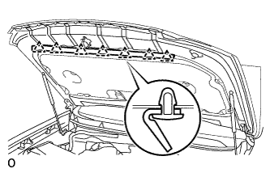

КАПОТ > РАЗБОРКА |
| 1. СНИМИТЕ ПЕРЕДНИЙ МОЛДИНГ КАПОТА В СБОРЕ |
Отверните 7 гаек и снимите передний молдинг капота.
| 2. СНИМИТЕ УПЛОТНЕНИЕ МЕЖДУ КАПОТОМ И КРОНШТЕЙНОМ РАДИАТОРА |
|  |
С помощью съемника фиксаторов расцепите 7 фиксаторов и снимите уплотнение между капотом и кронштейном радиатора.
| 3. СНИМИТЕ ИЗОЛЯТОР КАПОТА |
С помощью съемника фиксаторов освободите 11 фиксатора.
Освободите 2 захвата и снимите изолятор капота.
| 4. СНИМИТЕ СОПЛО СТЕКЛООМЫВАТЕЛЯ В СБОРЕ |
 |
С помощью отвертки освободите 2 захвата и отсоедините форсунку стеклоомывателя в сборе, как показано на рисунке.
| *1 | Защитная клейкая лента |
 |
Отсоедините форсунку омывателя в сборе от шланга омывателя.
| 5. ОТСОЕДИНИТЕ ШЛАНГ СТЕКЛООМЫВАТЕЛЯ В СБОРЕ |
 |
Освободите 4 зажима и отсоедините шланг стеклоомывателя.
| 6. СНИМИТЕ ЛЕВЫЙ КРОНШТЕЙН КАПОТА В СБОРЕ |
С помощью отвертки снимите 2 стопорных кольца, как показано на рисунке, и затем снимите стойку капота.
| *1 | Защитная клейкая лента |
| 7. СНИМИТЕ ПРАВЫЙ КРОНШТЕЙН КАПОТА В СБОРЕ |